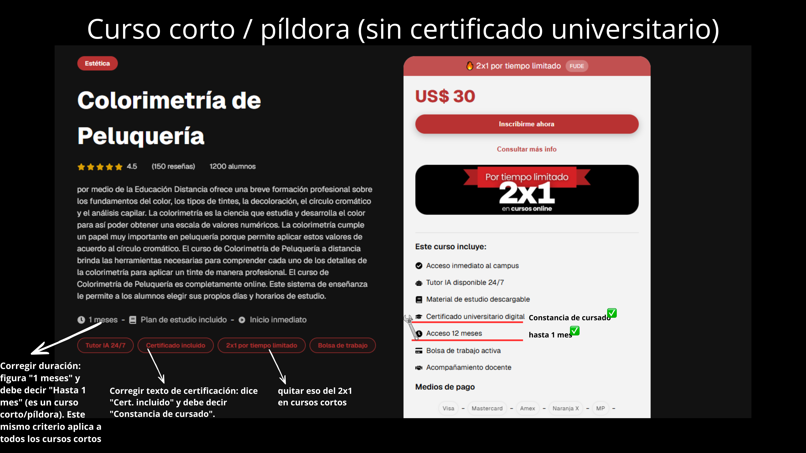
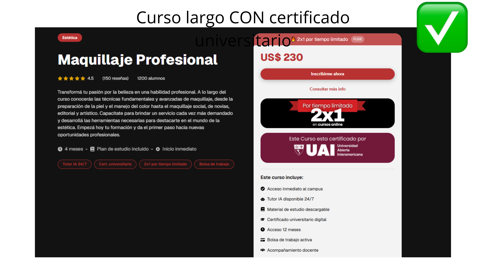
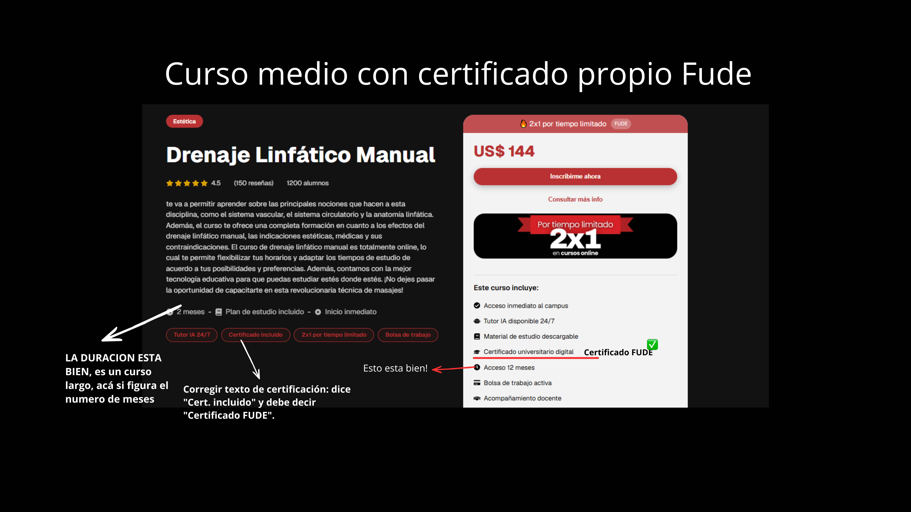

Fude — Tarjetas de curso corregidas (Grid Estética)
Maqueta de referencia visual — contenido corregido según revisión. No es diseño final, es guía de datos/lógica para el equipo de desarrollo.
Variante A — Curso largo CON certificado universitarioEj: Maquillaje Profesional
Estética
Maquillaje Profesional
Tutor IA
 Certificado por UAI
Certificado por UAI
Cert. universitario
US$ 230
Ver cursos
Variante B — Curso corto / píldora (sin certificado universitario)Ej: Colorimetría de Peluquería
Estética
Colorimetría de Peluquería
Tutor IA
Constancia de cursado
US$ 30
Ver cursos
Variante C — Curso medio con certificado propio FudeEj: Drenaje Linfático Manual
Estética
Drenaje Linfático Manual
Tutor IA
 Certificado FUDE
Certificado FUDE
Certificado Fude
US$ 144
Ver cursos
Referencia — Página de detalle de cada curso (capturas reales anotadas)

Curso corto/píldora (ej. Colorimetría de Peluquería): corregir duración de "1 meses" a "Hasta 1 mes" — este criterio aplica a todos los cursos cortos. Corregir el texto de certificación de "Cert. incluido" a "Constancia de cursado". En la sección "Este curso incluye" del modal: "Certificado universitario digital" → "Constancia de cursado", y "Acceso 12 meses" → "Hasta 1 mes". Además, quitar el cartel de "2x1 por tiempo limitado" en este tipo de curso (no aplica a cursos cortos).

Curso largo con certificado UAI (ej. Maquillaje Profesional): este es el caso correcto de referencia — duración "4 meses" ✅, badge/cartel "Este curso está certificado por UAI" ✅, "Certificado universitario digital" y "Acceso 12 meses" en el "Este curso incluye" ✅. Usar esta tarjeta como modelo para todos los cursos que sí otorgan certificación universitaria real.

Curso medio con certificado propio (ej. Drenaje Linfático Manual): la duración "2 meses" está bien (es un curso largo, no una píldora). Corregir el texto de certificación de "Cert. incluido" a "Certificado FUDE". En "Este curso incluye": "Certificado universitario digital" → "Certificado FUDE". El "Acceso 12 meses" en este caso está bien, ya que el curso sí dura ese tiempo de acceso real.
⚠️ Importante — origen del dato: tanto la información que aparece en el grid/listado de cursos por área como la que aparece en la página de detalle de cada curso (duración, tipo de certificación, badge UAI/FUDE, "Este curso incluye", acceso) debe traerse dinámicamente desde la base de datos de cada curso, no estar escrita a mano ni hardcodeada en el frontend. Así evitamos que quede desactualizada como pasa hoy, y que cualquier cambio futuro se actualice automáticamente en ambos lugares (grid + detalle) a la vez.
Resumen — Nota para el equipo de desarrollo
📌 Nota para el equipo de desarrollo — Grid/Listado + Página de detalle de cursos
- 1. Revisar la duración de todos los cursos del área de Estética (y luego el resto de áreas): los cursos cortos/píldora deben mostrar "Hasta 1 mes", nunca una cifra en meses inventada. Ej: Colorimetría de Peluquería figuraba con "1 meses"/"4 meses" según la pantalla, y en realidad es "Hasta 1 mes".
- 2. Revisar el texto de certificación de cada curso, hay 3 variantes posibles según el tipo real de curso: "Cert. universitario" (cursos con certificación UAI), "Constancia de cursado" (cursos cortos/píldora, sin certificación universitaria) y "Certificado FUDE" (certificado propio de la plataforma, no universitario).
- 3. Agregar el badge nuevo "Certificado por UAI" + logo, con el mismo estilo del pill "Tutor IA" pero con fondo
#721839y texto blanco. Mostrar únicamente en los cursos que realmente otorgan certificado universitario UAI (Variante A). - 4. Agregar también el badge "Certificado FUDE" para los cursos con certificado propio de la plataforma (Variante C). Mismo estilo/tamaño que el badge UAI, pero con fondo rojo con un efecto brillo/degradé (no plano) para diferenciarlo visualmente del UAI y de "Tutor IA".
- 5. Los dos logos (UAI y FUDE) van como
<img>dentro del badge — en esta maqueta son placeholders (logo-uai.png/logo-fude.png), reemplazar por los archivos finales. - 6. En la página de detalle de cada curso y en el modal de inscripción ("Este curso incluye"), aplicar el mismo criterio: reemplazar "Certificado universitario digital" por "Constancia de cursado" o "Certificado FUDE" según corresponda, y ajustar "Acceso 12 meses" a la duración real del curso (ej. "Hasta 1 mes" en cursos cortos, en el caso de cursos mayores a un mes si corresponde "Acceso 12 meses").
- 7. El cartel de "2x1 por tiempo limitado" no debería aparecer en los cursos cortos/píldora (ver nota sobre la captura de Colorimetría).
- 8. Toda esta información (duración, tipo de certificación, badges, "Este curso incluye", acceso) debe salir de forma dinámica desde la base de datos de cada curso — tanto en el grid/listado como en la página de detalle —, no estar hardcodeada ni escrita a mano, para que un cambio se refleje automáticamente en los dos lugares.